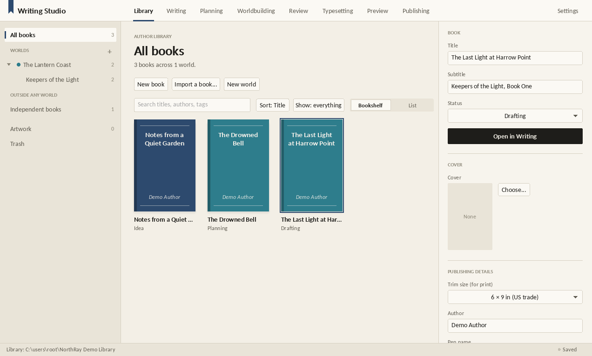
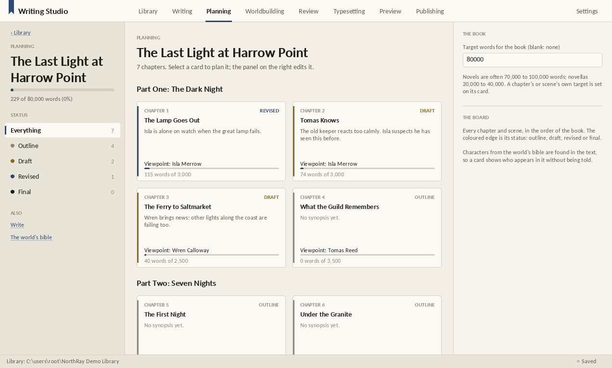
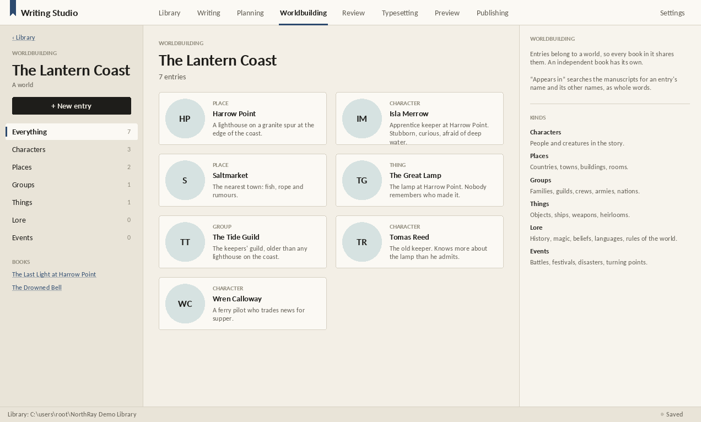
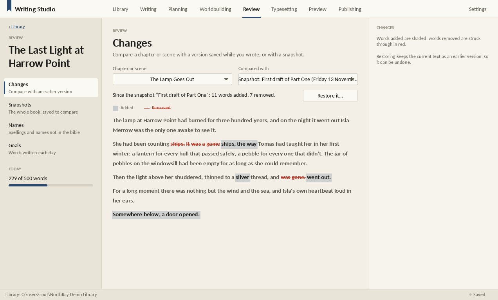
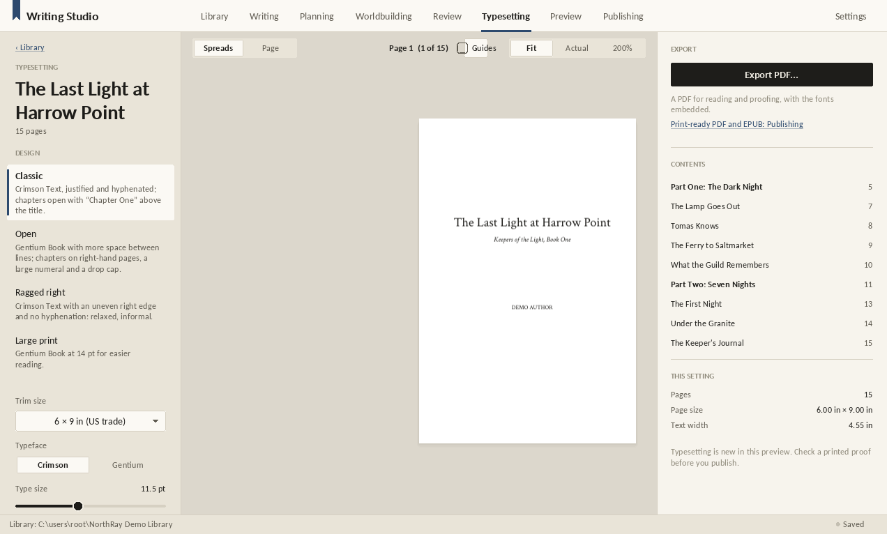
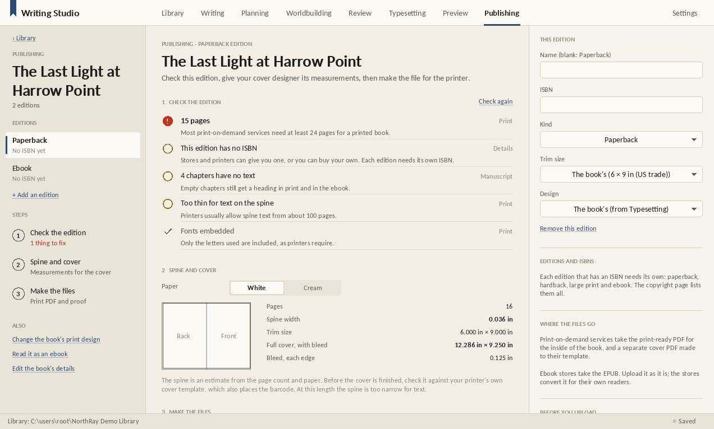

Writing and publishing
NorthRay Writing Studio
A writing and publishing studio for authors: worlds, series and books, through to finished editions.
NorthRay Software · Preview
Screenshots

The author library: worlds, series and books on a bookshelf. 
Planning: every chapter as a card, with status, viewpoint and word targets. 
Worldbuilding: the world's bible of characters, places, groups and lore. 
Review: what changed since a snapshot, word by word. 
Typesetting: the book laid out as printed pages. 
Publishing: a pre-flight check, spine width and print files for each edition.


About
NorthRay Writing Studio is a desktop app for writing and publishing books. It organises your work as worlds, series and books, and each book as parts, chapters and scenes, written in a calm, page-like editor that saves as you type, keeps earlier versions, and takes comments on the text. Pictures live in an artwork library, with crops and print-resolution checks that never touch the originals. Existing books can be imported from EPUB, Word, OpenDocument, HTML, Markdown and plain text, with PDF import as an experiment. Each book has a planning board, and each world keeps a bible of its characters, places and lore, showing where each appears in the books. Books are typeset into finished pages and previewed as an ebook on different devices, then exported as a print-ready PDF (PDF/X-1a) and an EPUB, after a pre-flight check that also gives the spine width for the cover. Everything stays on your PC; no account or subscription is needed.
What's in it
- IncludedAuthor Library: worlds, series, books
- IncludedManuscript editor: parts, chapters, scenes, versions
- IncludedImport: EPUB, Word, OpenDocument, HTML, Markdown, text (PDF experimental)
- IncludedArtwork and illustration control
- IncludedProfessional typesetting
- IncludedPrint and ebook previews
- IncludedEPUB and print-ready PDF export (first version)
- IncludedWorldbuilding: characters, places, lore and where they appear
- IncludedPlanning board: synopses, status, viewpoint, word targets
- IncludedReview: changes, snapshots, name checks, writing goals
- IncludedComments on the text
Features
- Author Library: worlds, series and books, with standalone and independent books
- Manuscript editor: parts, chapters and scenes, semantic paragraph styles, scene breaks, pictures and spell-check
- Saves as you type, keeps earlier versions of every chapter and scene, and a Trash you can restore from
- Artwork library: crop, size and align pictures without changing the originals, with print-resolution checks for your trim size
- Import from EPUB, Word (.docx), OpenDocument (.odt), HTML, Markdown and text; PDF import is experimental
- Reading order and chronological order for every series; drag and drop to organise
- Typesetting: justified, hyphenated pages with running heads and page numbers, shown as spreads, and exported as a PDF
- Worldbuilding: a bible of characters, places, groups, things, lore and events for each world, with relationships and the chapters each appears in
- Planning board: every chapter and scene as a card with its status, synopsis, viewpoint character, who appears in it, and word targets
- Review: compare any chapter with earlier versions or whole-book snapshots, check names against the world's bible, and track daily writing goals
- Comments: notes pinned to words in the text, resolved when they're dealt with, and listed for the whole book in Review
- Ebook preview on a phone, an e-reader and a tablet, with the reader's own text size, font and page colour
- Publishing: paperback, hardback, large-print and ebook editions with their own ISBNs; print-ready PDF/X-1a and EPUB 3 export, a pre-flight checklist, and spine and cover measurements
What's new
Version 0.23.1 · 2026-11-14
- Characters' names link by their first or last name on their own, or by runs that include one of them: for "Snarf Jill Grave", Snarf, Grave, Snarf Grave, Snarf Jill and Jill Grave all link, but Jill alone doesn't (a middle name is rarely used by itself). Names written in capitals ("JACKSON!") are found too.
Version 0.23.0 · 2026-11-14
- A spell checker of the Studio's own, with British or American English dictionaries to match the book's language. It knows every name in your bible, accepts Oxford -ize spellings in British English, and keeps a dictionary for each world (or independent book). Hover a mistake for suggestions (click one to use it), Add to the dictionary, or Ignore once. Your added words are listed with your style rules.
- Fixed: style hints could stay switched off after updating. They're now on (Full) unless you chose Off.
- Worldbuilding pages link to each other like a wiki: names of other entries in a summary, details or notes are links (a name shared by several offers a choice), and each page lists the entries that mention it under Linked from.
- Image boards: boards of pictures for a world or an independent book (characters, maps, places, moods). Drag pictures anywhere, resize them by the corner, caption them, tie them to an entry (and use one as the entry's picture). Pictures are kept in the library and listed in Artwork.
Version 0.22.0 · 2026-11-14
- Planning has three views. Corkboard: your chapters and scenes as index cards pinned to a cork board (the pin is the status). Drag a card beside another to move it before or after, or onto the middle of a chapter to make a scene part of it.
- Timeline: place chapters and scenes on the story's own calendar (days, weeks, months or years, plus words such as "Midsummer, 1204"), in a lane for each viewpoint character. Drag a card along to move it in time. A line joins them in reading order and turns orange where the story jumps back, so flashbacks stand out.
- Structure: lay a story shape over the book (three acts, fifteen beats, the hero's journey, seven points, five acts or kishōtenketsu). The book is shown by length with each beat marked, each beat says which chapter falls there, and you can match beats to chapters and see whether yours come early or late. An empty book can be outlined from a structure in one step.
- Characters' names link by their parts too: "Maren Ada Holt" is also found as Maren, Holt or Maren Holt (titles and words such as "of" don't count on their own). When characters share a name, it links to all of them and its card shows each one. Worldbuilding's "Appears in" and the cards' cast use the same rule, and a full name is no longer counted twice.
- Fixed: choosing from a menu opened by a button could act on the wrong item, or close the Studio.
Version 0.21.1 · 2026-11-14
- Every pop-up menu (right-click menus, and choices such as an entry's kind or a chapter's status) now has the NorthRay look, in light or dark, instead of the plain Windows menu.
- Hover a name from your Worldbuilding bible in the text to see its card: picture (or initials), name, kind, other names, summary and the first few details, with Open in Worldbuilding.
- Publisher
- NorthRay Software
- Version
- 0.23.1
- Download
- 8.1 MB
- Requires
- Windows 10 or 11, 64-bit
- Account
- Not needed